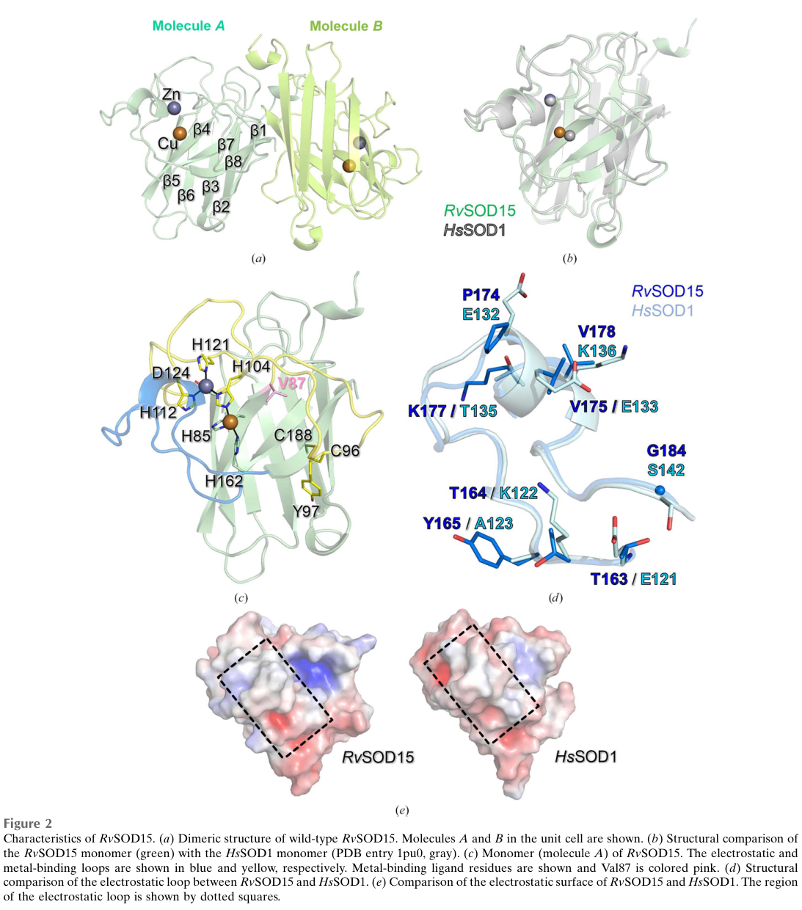

Putative Cu/Zn superoxide dismutase paralog from R. varieornatus, one of approximately 10 CuZnSOD-family proteins encoded by this extremotolerant tardigrade. Bioinformatic analysis (file:RAMVA/RvY_13070/RvY_13070-bioinformatics/RESULTS.md) shows that all four canonical Cu-binding histidines, all four Zn-binding residues, and both intrachain disulfide cysteines are preserved at the sequence level. The protein matches both PROSITE Cu/Zn SOD signatures (PS00087 for the N-terminal Cu coordination loop and PS00332 for the C-terminal disulfide region), as well as the Pfam SODC family (PF00080). This is consistent with canonical Cu/Zn superoxide dismutase activity, although biochemical confirmation has not been published for this specific paralog. 156 aa, 63% identity to human SOD1; all residues and PROSITE patterns match canonical CuZnSOD
| GO Term | Evidence | Action | Reason |
|---|---|---|---|
|
GO:0004784
superoxide dismutase activity
|
IEA
GO_REF:0000120 |
ACCEPT |
Summary: All catalytic residues (4 Cu His, 4 Zn ligands, 2 disulfide Cys) are preserved at the sequence level. PROSITE PS00087 (N-terminal Cu coordination signature) and PS00332 (C-terminal disulfide signature) both match. The protein is in Pfam family PF00080 (Sod_Cu). Canonical SOD activity is plausible based on sequence and motif analysis, though biochemical data are lacking for this specific paralog. ACCEPT with the caveat that confidence is limited to sequence-level inference.
Reason: All sequence-level criteria for canonical CuZnSOD are met.
Supporting Evidence:
file:RAMVA/RvY_13070/RvY_13070-bioinformatics/RESULTS.md
RvY_03754 | A0A1D1UP68 | bioinformatic verdict: FUNCTIONAL
|
|
GO:0005507
copper ion binding
|
IEA
GO_REF:0000002 |
ACCEPT |
Summary: All four canonical Cu-binding histidines are preserved at the sequence level. Copper binding is likely.
|
|
GO:0006801
superoxide metabolic process
|
IEA
GO_REF:0000002 |
ACCEPT |
Summary: Inferred from SOD activity annotation.
|
|
GO:0019430
removal of superoxide radicals
|
IEA
GO_REF:0000108 |
ACCEPT |
Summary: Inferred from SOD activity annotation.
|
|
GO:0046872
metal ion binding
|
IEA
GO_REF:0000002 |
KEEP AS NON CORE |
Summary: Parent term of the more specific Cu/Zn binding annotations. Both Cu and Zn binding are likely.
|
The research report should be a detailed narrative explaining the function, biological processes, and localization of the gene product. Citations should be given for all claims.
You should prioritize authoritative reviews and primary scientific literature when conducting research. You can supplement
this with annotations you find in gene/protein databases, but these can be outdated or inaccurate.
We are specifically interested in the primary function of the gene - for enzymes, what reaction is catalyzed, and what is the substrate specificity? For transporters, what is the substrate? For structural proteins or adapters, what is the broader structural role? For signaling molecules, what is the role in the pathway.
We are interested in where in or outside the cell the gene product carries out its function.
We are also interested in the signaling or biochemical pathways in which the gene functions. We are less interested in broad pleiotropic effects, except where these elucidate the precise role.
Include evidence where possible. We are interested in both experimental evidence as well as inference from structure, evolution, or bioinformatic analysis. Precise studies should be prioritized over high-throughput, where available.
Target specified by user: UniProt A0A1D1UP68; gene name RvY_03754-1 (syn. RvY_03754.1; ORF RvY_03754) from the tardigrade Ramazzottius varieornatus; protein family Cu/Zn superoxide dismutase (SOD); enzyme class EC 1.15.1.1.
Evidence limitation: within the retrieved literature corpus, no paper explicitly mentions the exact UniProt accession A0A1D1UP68 or the gene symbol RvY_03754-1. Consequently, any protein-specific claims beyond the UniProt description must be treated as inference from family/domain membership plus nearest-neighbor evidence from other R. varieornatus Cu/Zn SOD-like paralogs with direct experimental characterization (notably RvSOD15). This report therefore avoids attributing RvSOD15-specific sequence features (e.g., Val87) to A0A1D1UP68 unless explicitly supported.
During anhydrobiosis (desiccation-induced ametabolic “tun” state) and rehydration, organisms can experience oxidative stress due to ROS generation and imbalances between ROS production and antioxidant capacity. A contemporary tardigrade-focused review frames oxidative defense as central to cryptobiosis/extremotolerance and discusses “preparation for oxidative stress”—induction/maintenance of antioxidants during dehydration to mitigate ROS bursts upon rehydration (sadowskabartosz2024antioxidantdefensein pages 16-17).
Superoxide dismutases (SODs) are antioxidant enzymes that dismutate superoxide (O2•−) into molecular oxygen and hydrogen peroxide, typically described by the net reaction:
2 O2•− + 2 H+ → O2 + H2O2 (sim2023structureofa pages 1-2, sadowskabartosz2024antioxidantdefensein pages 13-15).
Cu/Zn SODs are widely distributed and classically consist of a β-barrel (“Greek-key”) fold with active-site metal cofactors and loops that guide substrate to the catalytic copper center (sim2023structureofa pages 3-4).
Given the UniProt designation (EC 1.15.1.1) and Cu/Zn SOD family assignment, the primary biochemical function inferred for A0A1D1UP68 is detoxification of superoxide anion radical (O2•−) through dismutation to H2O2 and O2 (sim2023structureofa pages 1-2, sadowskabartosz2024antioxidantdefensein pages 13-15).
The substrate specificity of canonical SODs is for superoxide (rather than broad ROS), consistent with the “first ROS formed” narrative in biological systems emphasized in tardigrade antioxidant reviews (O2•− as an initial ROS species) (sadowskabartosz2024antioxidantdefensein pages 13-15).
Cu/Zn SODs require copper (catalysis/redox cycling) and zinc (structural) at the active site. In the closest organism-matched primary study available, a R. varieornatus Cu/Zn SOD-like protein (RvSOD15) was solved by crystallography and metals were validated by anomalous scattering, supporting bona fide Cu and Zn occupancy in a tardigrade Cu/Zn SOD scaffold (sim2023structureofa pages 3-4, sim2023structureofa pages 2-3).
However, the same study demonstrates that not all R. varieornatus “Cu/Zn SOD-like” paralogs necessarily retain canonical catalytic competence: RvSOD15 carries an unusual substitution at a canonical copper-liganding position (His→Val), and even a back-mutation (V87H) can be structurally destabilized by a nearby flexible loop, suggesting reduced/abrogated SOD activity in that paralog (sim2023structureofa pages 1-2, sim2023structureofa pages 7-9).
Implication for A0A1D1UP68 annotation: family membership supports annotating SOD activity, but R. varieornatus contains atypical paralogs; therefore, confident assignment of full catalytic activity for A0A1D1UP68 would ideally require direct biochemical assay or conservation analysis of canonical metal-binding residues (not available in the retrieved corpus). This is consistent with the structural paper’s conclusion that some RvSOD paralogs may have evolved altered or lost canonical SOD function (sim2023structureofa pages 1-2, sim2023structureofa pages 7-9).
The RvSOD15 structure illustrates key determinants that can modulate activity in Cu/Zn SOD-like proteins:
- The electrostatic loop contributes charged/polar residues that guide anionic substrate toward the catalytic copper site; changes in this region can affect activity and/or metal uptake/reconstitution (sim2023structureofa pages 3-4, sim2023structureofa pages 7-9).
- The metal-binding loop geometry and flexibility influence copper coordination; in RvSOD15, loop features and water positioning near copper differ from canonical expectations, and the mutant remains unlikely to form a catalytically suitable copper site (sim2023structureofa pages 7-9).
Figures supporting these points are available from the paper’s structural panels (showing Val87/His87 region, electrostatic and metal-binding loops, and the copper site) (sim2023structureofa media ccb4aeae, sim2023structureofa media 56ed6f20, sim2023structureofa media 89eab734).
The UniProt-derived domain context indicates a cytosolic-like Cu/Zn SOD fold, but the retrieved literature does not contain direct localization experiments for A0A1D1UP68.
A R. varieornatus Cu/Zn SOD-like paralog (RvSOD15) is predicted to possess an N-terminal signal peptide, indicating secretion (sim2023structureofa pages 3-4, sim2023structureofa pages 2-3). This demonstrates that R. varieornatus Cu/Zn SOD-like proteins can plausibly function in extracellular/secretory contexts, not only canonical intracellular (cytosolic) settings.
Annotation implication: for A0A1D1UP68, subcellular localization should be treated as an open attribute unless corroborated by sequence-level targeting motifs (signal peptide, peroxisomal targeting, mitochondrial targeting) or experimental localization.
A 2024 review on tardigrade antioxidant defense summarizes that antioxidant enzymes (including SODs) are regulated across stress states and life stages; for example, SODs are reported as upregulated in the tun state in Milnesium tardigradum and SOD activity is increased with dehydration in Paramacrobiotus richtersi (sadowskabartosz2024antioxidantdefensein pages 16-17). These patterns align with the concept that oxidative defense supports successful entry into and recovery from anhydrobiosis (sadowskabartosz2024antioxidantdefensein pages 16-17).
The 2023 crystallographic study of RvSOD15 provides one of the most direct molecular-level insights into R. varieornatus Cu/Zn SOD-like proteins, revealing that gene-family expansion does not imply uniform enzymatic function. The authors propose that some paralogs may have low/absent canonical SOD activity and potentially unknown roles (sim2023structureofa pages 1-2, sim2023structureofa pages 7-9). This directly impacts functional annotation strategy: do not assume all paralogs are equivalent antioxidants without residue-level conservation or assay (sim2023structureofa pages 7-9).
A 2024 authoritative review compiles evidence for SOD gene-family expansion in tardigrades and reports high CuZn-SOD expression in R. varieornatus (sadowskabartosz2024antioxidantdefensein pages 13-15). The review provides gene-count context across species (with some internal inconsistency between narrative and table values) but supports the overall conclusion of expanded SOD repertoires relative to humans (sadowskabartosz2024antioxidantdefensein pages 13-15).
The 2024 review reports ~16 SODs in R. varieornatus and indicates that CuZn-SODs are highly expressed in R. varieornatus (sadowskabartosz2024antioxidantdefensein pages 13-15). (The same excerpt also contains a nearby table line listing R. varieornatus SOD counts as 17; this discrepancy highlights uncertainty in compiled gene counts and should be checked against the underlying genome annotation in a dedicated database query.) (sadowskabartosz2024antioxidantdefensein pages 13-15).
In a 2022 experimental study measuring antioxidant enzymes during dehydration and rehydration:
- In Acutuncus antarcticus, SOD activity differed significantly across hydration states (one-way ANOVA F(3,8)=4.33, p<0.05), with lower SOD activity in desiccated animals vs controls (t=3.62, p<0.05) (giovannini2022antioxidantresponseduring pages 6-8).
- In Paramacrobiotus spatialis, SOD activity showed no significant differences among hydrated, dry, and rehydration timepoints (giovannini2022antioxidantresponseduring pages 6-8).
These data demonstrate that SOD regulation during anhydrobiosis is species- and context-dependent, an important caution for extrapolating to A0A1D1UP68 without direct measurement in R. varieornatus.
For RvSOD15 (nearest-neighbor evidence), structural features near the copper site include altered water interaction distances (~2.6–3.4 Å) and loop-dependent destabilization of a putative copper ligand in the V87H variant (sim2023structureofa pages 7-9). While not a kinetic readout, these data support a mechanistic hypothesis of reduced catalytic competence in at least one R. varieornatus paralog (sim2023structureofa pages 7-9).
Within the retrieved corpus, the clearest “real-world implementation” relevant to SOD is its routine use as a biochemical readout (enzyme activity) of oxidative stress responses during dehydration/rehydration experiments in tardigrades (giovannini2022antioxidantresponseduring pages 6-8) and as a compiled marker in reviews of tardigrade extremotolerance (sadowskabartosz2024antioxidantdefensein pages 16-17).
No retrieved 2023–2024 source in this session provides direct evidence of biotechnological deployment specifically of tardigrade SOD proteins (e.g., as a recombinant therapeutic/enzyme product). The 2024 antioxidant-defense review’s reference context indicates that tardigrade stress genes are explored for engineering stress resistance more broadly (not necessarily SOD-specific) (sadowskabartosz2024antioxidantdefensein pages 23-24), but narrative details on SOD-centered applications were not present in the retrieved review passages.
| Study (citation) | Publication date | Organism/species | Molecule(s) studied | Main finding relevant to function/structure/localization | Quantitative/statistical details | URL/DOI |
|---|---|---|---|---|---|---|
| Sim & Inoue, Acta Crystallographica F (sim2023structureofa pages 1-2, sim2023structureofa pages 3-4, sim2023structureofa pages 2-3) | Jun 2023 | Ramazzottius varieornatus strain YOKOZUNA-1 | RvSOD15 (Cu/Zn SOD-like protein), V87H mutant | Established nearest-neighbor experimental evidence in the same species: Cu/Zn SOD-like protein adopts canonical Cu/Zn SOD fold and carries Cu and Zn, but an active-site His ligand is replaced by Val87; protein is also predicted to have an N-terminal signal peptide, suggesting secretion rather than classic cytosolic localization. | Catalyzed reaction discussed as 2 O2•− + 2 H+ → O2 + H2O2; crystal resolutions 2.20 Å (WT) and 2.10 Å (V87H); anomalous scattering confirmed Cu/Zn positions; sequence similarity reported as 44% to human SOD1 and 56% to a Hypsibius exemplaris Cu/Zn SOD. | https://doi.org/10.1107/S2053230X2300523X |
| Sim & Inoue, Acta Crystallographica F (sim2023structureofa pages 7-9, sim2023structureofa media ccb4aeae, sim2023structureofa media 56ed6f20, sim2023structureofa media 89eab734) | Jun 2023 | Ramazzottius varieornatus strain YOKOZUNA-1 | RvSOD15 and modeled RvSOD paralogs | Showed that some R. varieornatus Cu/Zn SOD paralogs are structurally atypical, with altered metal-binding residues, deletions in the electrostatic loop or β3 sheet, and likely reduced or lost canonical SOD activity; supports caution in assigning all tardigrade SOD paralogs as fully active enzymes. | Water interaction distances near Cu site 2.6–3.4 Å; V87H mutant still judged catalytically unsuitable; comparison cited to P104H BsSOD with activity ~10,000-fold lower than canonical Cu/Zn SODs; AlphaFold pLDDT examples: RvSOD15 86.99, RvSOD12 77.15, RvSOD16 var1 92.19; WT/V87H Rwork/Rfree 19.3/23.2 and 17.2/21.4. | https://doi.org/10.1107/S2053230X2300523X |
| Giovannini et al., Life (giovannini2022antioxidantresponseduring pages 6-8) | May 2022 | Paramacrobiotus spatialis and Acutuncus antarcticus | Total SOD enzymatic activity during dehydration/rehydration | Provides tardigrade-level physiological evidence that SOD activity changes during anhydrobiosis, supporting antioxidant function in dehydration stress, though not specific to the A0A1D1UP68 protein. | In P. spatialis, no significant SOD differences among hydrated, dry, 1 h rehydrated, and 24 h rehydrated groups; in A. antarcticus, one-way ANOVA F(3,8) = 4.33, p < 0.05; dry animals had lower SOD activity than controls (t = 3.62, p < 0.05). | https://doi.org/10.3390/life12060817 |
| Nagwani et al., Diversity (nagwani2022applicablelifehistoryand pages 10-11) | Aug 2022 | Tardigrades (review; includes Ramazzottius varieornatus context) | Antioxidant enzymes including SOD, CAT, GPx, GR | Review-level synthesis: SOD is part of endogenous ROS-detoxifying machinery implicated in successful anhydrobiosis; places Cu/Zn SOD-like proteins into the oxidative-stress pathway relevant to tardigrade survival and recovery. | Summarizes increased ROS with time in anhydrobiosis and notes reports that CAT/SOD activities are important in tardigrade anhydrobiosis; no protein-specific kinetic values for R. varieornatus Cu/Zn SOD given in the cited excerpt. | https://doi.org/10.3390/d14080664 |
| Sim & Inoue, Acta Crystallographica F (sim2023structureofa pages 1-2) | Jun 2023 | Ramazzottius varieornatus strain YOKOZUNA-1 | RvSOD15 and other RvSOD family members | Concluded that tardigrades possess expanded antioxidant repertoires including SODs, but duplication does not imply equivalent enzyme function; some RvSOD members may be neofunctionalized or noncanonical. | No exact family count or expression fold-change reported in the excerpt; qualitative conclusion that some paralogs are truncated or mutated at catalytic residues. | https://doi.org/10.1107/S2053230X2300523X |
Table: This table compiles the most relevant experimental and review evidence for functional annotation of Ramazzottius varieornatus Cu/Zn SOD-like proteins as proxies for UniProt A0A1D1UP68. It highlights what is directly known in tardigrades about reaction chemistry, structural constraints, likely localization, and stress-related roles.
Cropped figure regions showing RvSOD15 overall fold/loops and copper-site details supporting the mechanistic discussion are available from the structural paper (sim2023structureofa media ccb4aeae, sim2023structureofa media 56ed6f20, sim2023structureofa media 89eab734).
References
(sadowskabartosz2024antioxidantdefensein pages 16-17): Izabela Sadowska-Bartosz and Grzegorz Bartosz. Antioxidant defense in the toughest animals on the earth: its contribution to the extreme resistance of tardigrades. International Journal of Molecular Sciences, 25:8393, Aug 2024. URL: https://doi.org/10.3390/ijms25158393, doi:10.3390/ijms25158393. This article has 14 citations.
(sim2023structureofa pages 1-2): Kee-Shin Sim and Tsuyoshi Inoue. Structure of a superoxide dismutase from a tardigrade: ramazzottius varieornatus strain yokozuna-1. Acta crystallographica. Section F, Structural biology communications, 79:169-179, Jun 2023. URL: https://doi.org/10.1107/s2053230x2300523x, doi:10.1107/s2053230x2300523x. This article has 5 citations.
(sadowskabartosz2024antioxidantdefensein pages 13-15): Izabela Sadowska-Bartosz and Grzegorz Bartosz. Antioxidant defense in the toughest animals on the earth: its contribution to the extreme resistance of tardigrades. International Journal of Molecular Sciences, 25:8393, Aug 2024. URL: https://doi.org/10.3390/ijms25158393, doi:10.3390/ijms25158393. This article has 14 citations.
(sim2023structureofa pages 3-4): Kee-Shin Sim and Tsuyoshi Inoue. Structure of a superoxide dismutase from a tardigrade: ramazzottius varieornatus strain yokozuna-1. Acta crystallographica. Section F, Structural biology communications, 79:169-179, Jun 2023. URL: https://doi.org/10.1107/s2053230x2300523x, doi:10.1107/s2053230x2300523x. This article has 5 citations.
(sim2023structureofa pages 2-3): Kee-Shin Sim and Tsuyoshi Inoue. Structure of a superoxide dismutase from a tardigrade: ramazzottius varieornatus strain yokozuna-1. Acta crystallographica. Section F, Structural biology communications, 79:169-179, Jun 2023. URL: https://doi.org/10.1107/s2053230x2300523x, doi:10.1107/s2053230x2300523x. This article has 5 citations.
(sim2023structureofa pages 7-9): Kee-Shin Sim and Tsuyoshi Inoue. Structure of a superoxide dismutase from a tardigrade: ramazzottius varieornatus strain yokozuna-1. Acta crystallographica. Section F, Structural biology communications, 79:169-179, Jun 2023. URL: https://doi.org/10.1107/s2053230x2300523x, doi:10.1107/s2053230x2300523x. This article has 5 citations.
(sim2023structureofa media ccb4aeae): Kee-Shin Sim and Tsuyoshi Inoue. Structure of a superoxide dismutase from a tardigrade: ramazzottius varieornatus strain yokozuna-1. Acta crystallographica. Section F, Structural biology communications, 79:169-179, Jun 2023. URL: https://doi.org/10.1107/s2053230x2300523x, doi:10.1107/s2053230x2300523x. This article has 5 citations.
(sim2023structureofa media 56ed6f20): Kee-Shin Sim and Tsuyoshi Inoue. Structure of a superoxide dismutase from a tardigrade: ramazzottius varieornatus strain yokozuna-1. Acta crystallographica. Section F, Structural biology communications, 79:169-179, Jun 2023. URL: https://doi.org/10.1107/s2053230x2300523x, doi:10.1107/s2053230x2300523x. This article has 5 citations.
(sim2023structureofa media 89eab734): Kee-Shin Sim and Tsuyoshi Inoue. Structure of a superoxide dismutase from a tardigrade: ramazzottius varieornatus strain yokozuna-1. Acta crystallographica. Section F, Structural biology communications, 79:169-179, Jun 2023. URL: https://doi.org/10.1107/s2053230x2300523x, doi:10.1107/s2053230x2300523x. This article has 5 citations.
(giovannini2022antioxidantresponseduring pages 6-8): Ilaria Giovannini, Paola Antonia Corsetto, Tiziana Altiero, Gigliola Montorfano, Roberto Guidetti, Angela Maria Rizzo, and Lorena Rebecchi. Antioxidant response during the kinetics of anhydrobiosis in two eutardigrade species. Life, 12:817, May 2022. URL: https://doi.org/10.3390/life12060817, doi:10.3390/life12060817. This article has 16 citations.
(sadowskabartosz2024antioxidantdefensein pages 23-24): Izabela Sadowska-Bartosz and Grzegorz Bartosz. Antioxidant defense in the toughest animals on the earth: its contribution to the extreme resistance of tardigrades. International Journal of Molecular Sciences, 25:8393, Aug 2024. URL: https://doi.org/10.3390/ijms25158393, doi:10.3390/ijms25158393. This article has 14 citations.
(nagwani2022applicablelifehistoryand pages 10-11): Amit Kumar Nagwani, Łukasz Kaczmarek, and Hanna Kmita. Applicable life-history and molecular traits for studying the effects of anhydrobiosis on aging in tardigrades. Diversity, 14:664, Aug 2022. URL: https://doi.org/10.3390/d14080664, doi:10.3390/d14080664. This article has 10 citations.

id: A0A1D1UP68
gene_symbol: RvY_03754
product_type: PROTEIN
status: IN_PROGRESS
taxon:
id: NCBITaxon:947166
label: Ramazzottius varieornatus
description: >-
Putative Cu/Zn superoxide dismutase paralog from R. varieornatus, one of approximately 10 CuZnSOD-family proteins encoded by this extremotolerant tardigrade. Bioinformatic analysis (file:RAMVA/RvY_13070/RvY_13070-bioinformatics/RESULTS.md) shows that all four canonical Cu-binding histidines, all four Zn-binding residues, and both intrachain disulfide cysteines are preserved at the sequence level. The protein matches both PROSITE Cu/Zn SOD signatures (PS00087 for the N-terminal Cu coordination loop and PS00332 for the C-terminal disulfide region), as well as the Pfam SODC family (PF00080). This is consistent with canonical Cu/Zn superoxide dismutase activity, although biochemical confirmation has not been published for this specific paralog. 156 aa, 63% identity to human SOD1; all residues and PROSITE patterns match canonical CuZnSOD
existing_annotations:
- term:
id: GO:0004784
label: superoxide dismutase activity
evidence_type: IEA
original_reference_id: GO_REF:0000120
review:
summary: >-
All catalytic residues (4 Cu His, 4 Zn ligands, 2 disulfide Cys) are preserved at the sequence level. PROSITE PS00087 (N-terminal Cu coordination signature) and PS00332 (C-terminal disulfide signature) both match. The protein is in Pfam family PF00080 (Sod_Cu). Canonical SOD activity is plausible based on sequence and motif analysis, though biochemical data are lacking for this specific paralog. ACCEPT with the caveat that confidence is limited to sequence-level inference.
action: ACCEPT
reason: >-
All sequence-level criteria for canonical CuZnSOD are met.
supported_by:
- reference_id: file:RAMVA/RvY_13070/RvY_13070-bioinformatics/RESULTS.md
supporting_text: >-
RvY_03754 | A0A1D1UP68 | bioinformatic verdict: FUNCTIONAL
- term:
id: GO:0005507
label: copper ion binding
evidence_type: IEA
original_reference_id: GO_REF:0000002
review:
summary: >-
All four canonical Cu-binding histidines are preserved at the sequence level. Copper binding is likely.
action: ACCEPT
- term:
id: GO:0006801
label: superoxide metabolic process
evidence_type: IEA
original_reference_id: GO_REF:0000002
review:
summary: >-
Inferred from SOD activity annotation.
action: ACCEPT
- term:
id: GO:0019430
label: removal of superoxide radicals
evidence_type: IEA
original_reference_id: GO_REF:0000108
review:
summary: >-
Inferred from SOD activity annotation.
action: ACCEPT
- term:
id: GO:0046872
label: metal ion binding
evidence_type: IEA
original_reference_id: GO_REF:0000002
review:
summary: >-
Parent term of the more specific Cu/Zn binding annotations. Both Cu and Zn binding are likely.
action: KEEP_AS_NON_CORE
references:
- id: GO_REF:0000002
title: Gene Ontology annotation through association of InterPro records with GO
terms
findings: []
- id: GO_REF:0000108
title: Automatic assignment of GO terms using logical inference, based on on inter-ontology
links
findings: []
- id: GO_REF:0000120
title: Combined Automated Annotation using Multiple IEA Methods
findings: []
- id: file:RAMVA/RvY_13070/RvY_13070-bioinformatics/RESULTS.md
title: Bioinformatics analysis of Cu/Zn SOD paralogs in R. varieornatus
findings:
- statement: "Bioinformatic verdict for RvY_03754: FUNCTIONAL. 156 aa, 63% identity to human SOD1; all residues and PROSITE patterns match canonical CuZnSOD"
- id: PMID:37358501
title: Structure of a Ramazzottius varieornatus Cu/Zn SOD paralog (Sim and Inoue
2023).
findings:
- statement: RvSOD15 structural work cautions that even paralogs matching canonical
sequence signatures can have subtle structural divergence; sequence-level
"FUNCTIONAL" annotation should be treated as inference pending biochemical
validation.
- id: file:RAMVA/RvY_03754/RvY_03754-deep-research-falcon.md
title: Deep research report on RvY_03754 (Falcon/Edison Scientific Literature)
findings:
- statement: No primary publication directly characterizes RvY_03754 / A0A1D1UP68;
sequence-level annotation as a canonical Cu/Zn SOD is supported by 63 percent
identity to human SOD1, full Cu/Zn ligand and disulfide cysteine conservation,
and matching both PROSITE Cu/Zn SOD signatures (PS00087, PS00332), consistent
with the bioinformatic "FUNCTIONAL" verdict.
{kind=link}